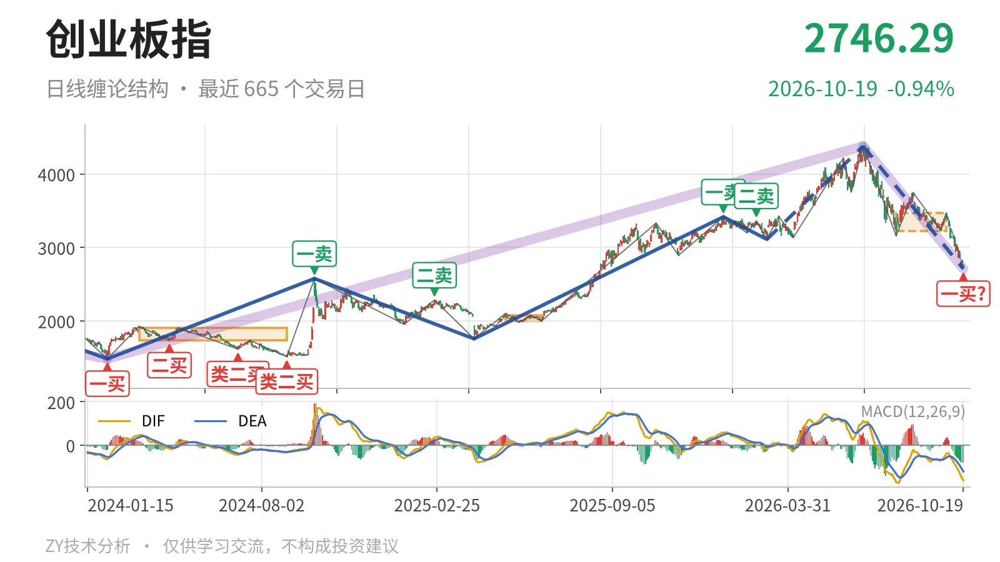

创业板指｜跌破3227中枢 2744暂成一买

最近日线中枢 3227.18—3472.47点，收盘位于中枢之下
一句话：日线跌破中枢下沿，2743.87点仅作暂定一买，反抽看3227点
🧭 走势结构：大级别上涨未破坏，日线下跌段延续
当前处于6月25日以来的日线下跌段中，这一段还在延续。更大级别上，2024年2月5日至2026年6月25日的上涨走势尚未结束；但其后6月25日至10月16日已经压到2743.87点，跌幅约37.4%。日线线段里，6月25日以来的下跌段内含5笔，仍在向下延伸，因此当前不是中枢震荡。

📦 中枢与位置：跌破最近中枢下沿，短期失守3227点
最新收盘2772.38点，低于最近日线笔中枢下沿3227.18点约14.1%。该中枢是7月30日至9月22日形成的，区间3227.18—3472.47点，尚未完成。它此前高于2025年5月14日至6月23日中枢1996.96—2076.91点，中枢一度上移；现在价格跌回下沿之外，说明上移后的中枢未被守住。
🔖 买卖点：2743.87点只是暂定一买
10月16日出现的一买2743.87点，所在9月22日至10月16日下跌笔还在延续，因此这个一买只能按暂定处理，会随该笔延续而变化。此前1月13日一卖3416.84点、2月25日二卖3363.18点，一个比一个低，已经固定为日线笔级别卖点。当前低点低于7月30日3158.14点和9月16日3227.18点，但还没有线段级别买点，性质仍只是日线笔级别。

⚖️ 背驰：价格新低，动能未新低
当前9月22日以来下跌笔，与6月25日至7月30日下跌笔比较，出现“新低不新弱”。前一段绿柱面积1837，DIF低点-171.1；当前段绿柱面积487，DIF低点-152.7，均未超过前段。价格却从4380.41点下探至2743.87点，创下该下跌段新低。因当前笔还在延续，绿柱面积仍可能增加，这个背驰只能按未完成状态观察。
🔎 关键位置观察：3227点决定三卖还是中枢扩展
最近中枢下沿3227点附近是结构分界。若反抽回不到3227点上方，对7月30日至9月22日中枢将构成三卖，下跌段还会延续。若重新站上3227点，则当前跌破更可能只是中枢扩展，短期结构转中性。下方2576点附近是2024年10月8日一卖位置，属于下一处结构承接位。综合看，跌破中枢下沿后尚未回抽，结构偏弱，分界看3227点。
⚠️ 本文为基于公开行情数据的缠论技术结构记录，由程序自动计算并生成，仅供学习交流，不构成任何投资建议。市场有风险，投资需谨慎。